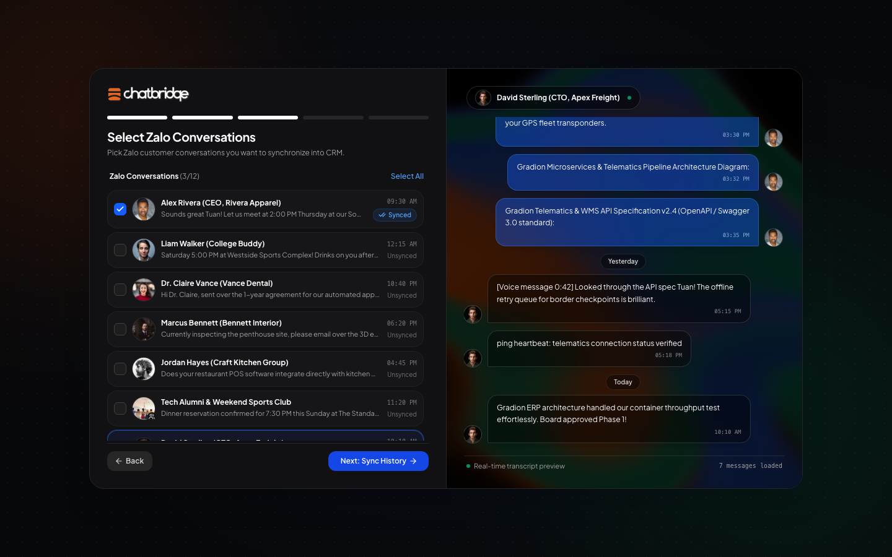
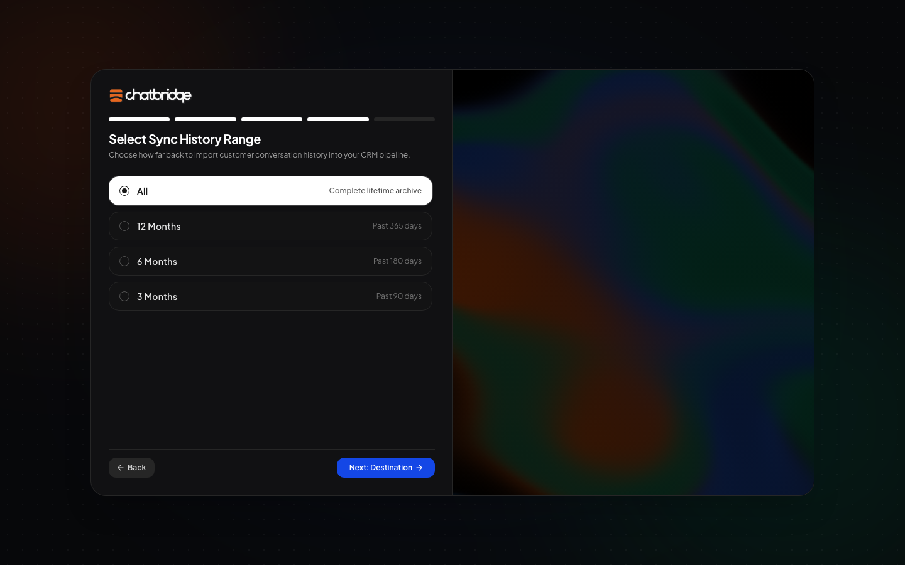
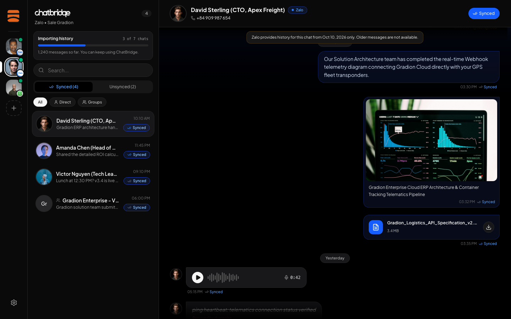
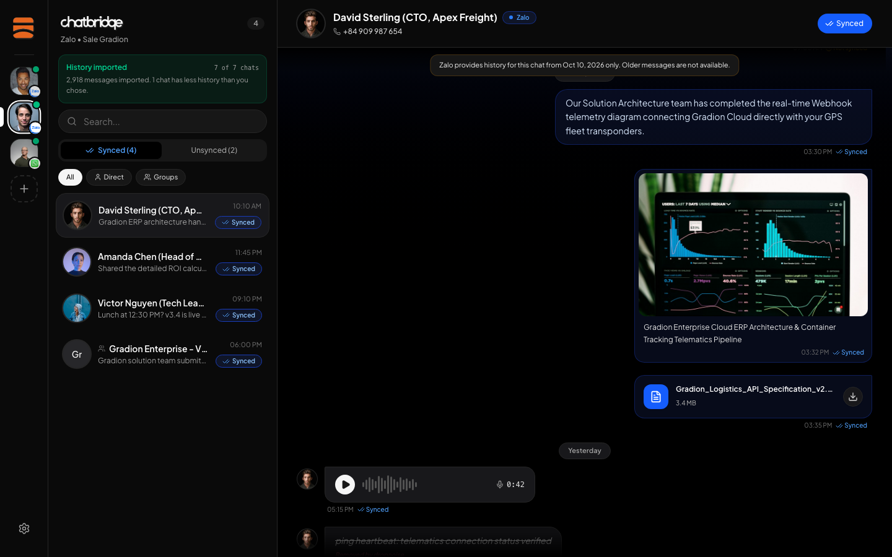

Prototype, sample data · Select chats, history range and import · screens: select-chats, history-range, home-importing, home-imported
Step 3: select Zalo chats (theirs)

Step 4: history range (theirs)

Import running (added)

Import finished (added)
